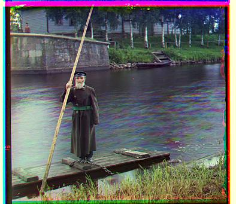

Colorizing the Prokudin-Gorskii photo collection
by Ankit Mathur
General Algorithm
The general concept of this project is to align images obtained from a red, green, and blue filter so that they can be stacked to generate a colored image. My approach to this was to begin by trying to align the green filter with the blue filter and the red filter with the blue filter as well. I searched over a 15 pixel displacement window, fixing the blue image and shifting the other two filtered images. To score each of the displacements, I used a basic measure of similarity called the sum squared difference, computed by squaring the differences between 2 images and adding up the resulting matrix.
However, this approach is unsuccessful because adjusting the window size to fit larger images is a problem, with the work being done being on a squared with regards to the number of pixels in the image being analyzed. Therefore, we had to employ image pyramid techniques to align the images. What this involved was scaling down the image until it was a much smaller image. Then, running the above displacement algorithm on this smaller image was tractable. At every higher level of the pyramid, by rescaling the displacement vector that was found in the previous step by a factor corresponding to the pyramid reduction factor, the amount of work needed is vastly reduced. Therefore, at every other level, you can scan much fewer pixels to correct for inaccuracy in the Gaussian sampling reduction step.
Adjustments to the Conventional Algorithm
I made some adjustments to the traditional algorithm (not included in the Bells and Whistles portion, but still different from what others may have done). For example, I realized that many of these images seem slightly damaged or have scanning errors at the edges. To properly match the images, the middles are sufficient, and so I cropped 12.5% off each of the borders (left, top, right, bottom). This improved the quality of my matching algorithm a reasonable bit, since I was not able to implement border removal. I suspect this has a similar impact on quality as border removal.
In addition to this, I also experimented with using Normalized Cross Correlation, but the offsets I was getting were the same for a majority of the images, but the computation time of computing the NCC was greater than the computation time of the Sum Squared Difference, so I ended up going with Sum Squared Differences. Also, I tried to compute an alignment of red with blue and then green with the shifted red, but this experiment didn't lead to substantially different offsets, so I ended up going the traditional approach. All in all, not all my experiments were successful, but it was fun playing around with different tricks in this algorithm!
Bells and Whistles
Auto White Balancing
Using the gray-world hypothesis, I went about experimenting with some white balancing approaches. Based on the recommendation of some papers (in particular "Automatic White Balancing in Digital Photography"), I decided to go about this by computing the means of each of the individual filters (red, green, and blue). Based on the gray-world hypothesis, these means should be epsilon the same. If they aren't, then the red and blue filters can be scaled by constants which will increase or decrease the intensity of the whites and blacks in the image. These fractions are computed simply by dividing the mean of the green by the mean of the red and the blue and scaling each of those filters respectively by this constant. I had to make sure that the range of the image remained in [0,1].
In addition to this, I noticed some other approaches that mentioned that a simple technique for having cleaner whites and blacks. To correct for this, I simply rounded up all values that looked close within an epsilon to be white and rounded values that were close enough within some epsilon to be black. This simple adjustment actually did make some of the images look better. Here are the visual results of the auto-white balancing difference:
Without WB:

With WB:
Contrasting
The images that are produced frequently do not have the best contrast, possibly because of effects that get washed out in certain filters or perhaps imperfect printing/scanning of the images. Therefore, I used an approach that uses contrast stretching to improve the contrast of the image. In essence, all this means is that we take the histogram of the image and find the bottom and top percentile colorizations and drop the very top and the very bottom and rescale (or "stretch") the image to fit this new color scheme. This generates contrast, but it is limited by the fact it can only stretch by using what is, in essence, a linear function. There exist more advanced versions of contrast generation, but I found that they sometimes generated highly unrealistic images.
Here are visual examples of the improvement one can get by performing this adjustment:
Without contrasting:

With contrasting:

Note the somewhat deeper blues in the sky and in the bluer parts of the water.
Better Features (Aligning the Edge Map)
There are some fundamental issues with aligning based on the RGB values, the first one just being that these values might be skewed by things like intensity or might in general, provide high scores in cases where there is not an actually correct alignment in the image. Therefore, an obvious solution to this problem is to find the edge-map and align that instead. The edges represent the part of the image that is actually relevant to align, since it is perfectly indicative of the actual structure of the image. Therefore, I used a sobel filter to find the vertical and horizontal edge maps and combined these to formed a detail edge image. I used these when aligning, and I got much better results, especially on some of the bigger images.
Cropping
I wrote a cropping function that essentially scans an image until it sees an tunable epsilon drop in the dark pixel values, and it performs this behavior in reverse on the other side of the image. Then, it returns a version of the image with that border cropped out. External logic exists in the code that essentially takes the minimum crop across all 3 of the filters (over-cropping would lead to information loss, which, in my opinion, is a worse outcome than just not cropping some of the border).
My Own Bells and Whistles
Scoring the Inner Two Thirds
One of the most key innovations that I ended up using was not scoring the borders. I noticed that the border was causing some weird variation in the offsets that I was coming up with. Therefore, I started cropping out the outer 1/3 before computing the SSD. This has the most significant effect of any of the Bells and Whistles. Even using the edge detection was not as useful as doing this.
Denoising
I also pursued a strategy involving denoising the images in order to remove some problems that I saw in some of the images. It served the purpose of taking some images that had some reduced brightness due to some speckling in the image. The denoising has the effect of making this much better. Here is an example of that:
Without denoising:
With denoising:

Image Results
-
Offsets: Red: (1, 7), Blue: (-2, -5)
-
 Offsets: Red: (18, 56), Blue: (-24, -50)
Offsets: Red: (18, 56), Blue: (-24, -50)
- Offsets: Red: (-2, 64), Blue: (-16, -60)
- Offsets: Red: (6, 48), Blue: (-16, -42)
- Offsets: Red: (4, 62), Blue: (-8, -56)
- Offsets: Red: (1, 6), Blue: (-2, 3)
-
 Offsets: Red: (-1, 4), Blue: (-1, -3)
Offsets: Red: (-1, 4), Blue: (-1, -3)
-
 Offsets: Red: (8, 98), Blue: (-28, -78)
Offsets: Red: (8, 98), Blue: (-28, -78)
- Offsets: Red: (-1, 8), Blue: (0, -7)
- Offsets: Red: (-2, 58), Blue: (-14, -52)
- Offsets: Red: (26, 44), Blue: (-6, -42)
- Offsets: Red: (10, 72), Blue: (-12, -64)
- Offsets: Red: (8, 60), Blue: (-20, -56)
Some misalignments
In my harvesters image, some of the green channel is misaligned/visible in one of the harvesters and other parts of the blue channel are also peeking through in part of the image. I suspect this may have to do with some denaturing of the channels, because the rest of the image is very well aligned.
Results on other images in the Prokudin-Gorskii Collection
- 